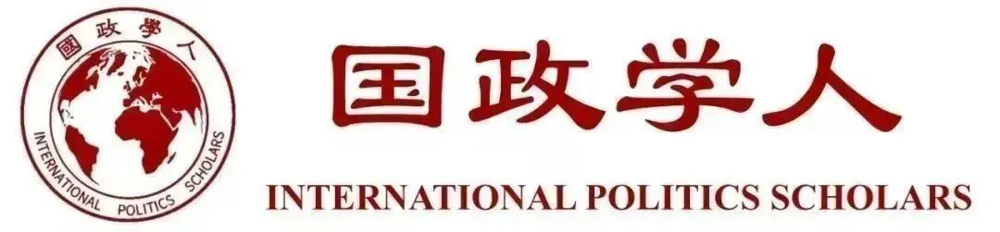

收录于合集

作品简介
【作者】 J.Ann Tickner，女性主义国际关系学代表人物，南加州大学国际关系教授，研究领域包括国际关系理论，女性主义国际关系学等。Jacqui True，性别研究专家，莫纳什大学国际关系教授，研究领域包括国际关系、性别主流化、女权主义社会科学方法等。
【编译】 贺凡熙（国政学人编译员，南开大学周恩来政府管理学院）
【校对】 金 琳
【审核】 房宇馨
【排版】 高佳美
【来源】 J Ann Tickner, Jacqui True, A Century of International Relations Feminism: From World War I Women’s Peace Pragmatism to the Women, Peace and Security Agenda, International Studies Quarterly , Volume 62, Issue 2, June 2018, Pages 221–233, https://doi.org/10.1093/isq/sqx091.

期刊简介
《国际研究季刊》（International Studies Quarterly）是国际研究协会的旗舰期刊，由牛津大学出版社每年发行四期，旨在发表与国际研究中重要理论性、实证性、规范性主题相关的领先学术成果。根据Journal Citation Reports的数据，2018年该期刊的影响因子为2.172。
从一战的妇女和平实用主义到妇女、和平与安全议程
A Century of International Relations Feminism: From World War I Women’s Peace Pragmatism to the Women, Peace and Security Agenda
内容提要
虽然对于一战的研究著述颇多，但有关女性的和平活动在这些回顾中较少出现，在学科历史的回顾中，也往往不包含女性或缺少对女性议题的关注， 国际关系学术界仍是被男性主导。 因此，海牙国际妇女大会上女性有关战争原因与预防的可能性的论述也被忽略。整个二十世纪，女性活动家一直在努力将基于性别的暴力行为和女性在和平进程中的参与纳入国家议程中。传统学科史认为女权主义在国际关系中姗姗来迟，而作者认为，国际关系对于女权主义来说才是姗姗来迟的，国际关系完全忽略了女权主义学者有关国际和平与安全理论的传统。本文通过研究早期女权主义学者的贡献来理解国际政治。 第一部分主要关注妇女和平政党（WPP）、国际妇女大会（ICW）和1915年举行的海牙国际妇女大会，关注女性实用主义哲学派奠基人简·亚当斯（Jane Addams）的著作与社会活动，以及产生于海牙国际妇女大会的实用主义是如何在一些原则中得到体现的；第二部分研究女权主义活动和女权主义学者过去三十年争论和研究的根本性原则，这些原则推动了联合国妇女、和平与安全议程以及支持女权主义外交政策的产生；第三部分研究早期女权主义和平活动家实施的实用主义和当代女权主义者知识建构的相同之处。总之，女性主义国际关系学，尤其是有关WPS议程的学者和行动主义显示并延伸了女性实用主义者寻求社会变动的理论传统。
文章导读
01 ****
一战中的女性和平运动：对早期女性主义国际关系学的干预
妇女和平党 _ （Women’s Peace Party，_ 以下简称 _ WPP）_
在早期妇女和平运动中，由于妇女常常被认为肩负养育儿童的责任，因而更了解保护生命的价值，也因此能更好的在不诉诸暴力的情况下解决国际争端，WPP将男性和女性区别化，认为两者之间的不同最终可以构建一个基于性别平等的、和平的人类关系的社会。 1915年简·亚当斯于华盛顿召集的女性和平组织会议是WPP的开端，该组织的平台同海牙国际妇女大会的决议相似，会议提出“国家联合”应该超越“国家均势”，并呼唤国际警察力量的建立以取代国家军队，会议认为女性在发展全球意识上有着既得利益。该组织回应欧洲女性在冲突中的诉求，强调同战争有关的议题，其中许多内容后被ICW所采用。
国际妇女大会 _ （The International Congress of Women，_ 以下简称 _ ICW）_
1915年召开的海牙国际妇女大会的目的是提出一系列和平提案以及发起结束战争的会谈，战时危险状况以及国家的阻挠都是各国女性赴会的阻碍，对于此次会议的报道也多是谴责或讽刺。但会议中的许多决议都十分具有前瞻性，会议的决议预示了国际联盟的形成。 会议上通过的决议可以分为七个部分，第一部分有关妇女和战争，挑战了妇女在战争中能够得到保护的观点，并指出在所有战争中妇女都是极易遭遇暴力的；第二、三部分敦促国家尽快展开寻求公正和平的谈判，强调仲裁、调解以及女性有政治参与权利的民主，预示了国际规范的变化。第四部分敦促战后立即召开另一场海牙会议，同时建立常设国际法院。第五部分要求女性参与到和平商讨中，第六部分建议国家控制军事装备的制造和销售，第七部分建议大会派出使者将有关信息和决议通知欧洲的所有参战国和中立国。 但最终，ICW的决议被认为过于理想化而没有得到国家支持。
女权实用主义
女权实用主义的关键原则是民主作为一个群体过程的重要性，其中妇女参与至关重要，而教育是社会变革的理性力量，如今的妇女和平行动主义如妇女、和平与安全议程（Women，Peace and Security Agenda，简称WPS）推进了一个世纪前女权主义实用主义的思想。
简·亚当斯质疑政治事务的公共领域和家庭、个人事务的私人领域的性别划分，认为女性被禁锢在一种压迫性的权力体系中，这将她们限制在私人领域。赫尔大厦的工作使得亚当斯在互动中强调倾听和理解，近年的女权主义政治理论同样强调倾听他人的声音，并将其视为对民主质量至关重要的政治实践和国际关系的责任伦理。 19世纪末出现的种族理论家杜波依斯基于赫尔大厦的模型，将种族主义和性别歧视联系起来，明确地谈到了黑人妇女的压迫以及她们与奴隶制的关系，认为所有的妇女都受到了她们在私人领域中所扮演的角色的压迫，同时认识到女性相对于男性，以及黑人女性相对于白人女性在工作和薪酬上的劣势。
（ 译者注：赫尔大厦是简·亚当斯于美国芝加哥创立的机构，该机构致力于贫民福利与社会教育，该机构建立后，许多志愿者来此处居住，全力帮助邻里解决困难和问题。赫尔大厦是一个关注整个邻里生活福利的社会机构，也是一个大型的社会学研究室，研究诸如贫困、劳动、教育、政治等引起争议的问题。赫尔大厦的妇女开创了女权实用主义解决问题的方法，使其知识可以被最贫穷的社会成员所用，工作中强调倾听和共情也成为此后女权主义政治理论的重要知识来源，赫尔大厦是世界的一个缩影，人们在此学习如何在多元文化和多国背景下共同生活。
参考：简·亚当斯《赫尔大厦二十年》 ）
实用主义遇上妇女和平行动主义
简·亚当斯和其他当时的女权主义者受益于赫尔大厦的经历，认为本地和全球紧密联系在一起，而民主、社会正义和国际和平是必须通过非暴力手段实现的相互定义的概念。
WPP和ICW的平台上充斥着母性主义的修辞，假定了一种本质主义的逻辑，将女性与一种静态的母性概念联系在一起。当代的女权主义者对母性主义进行了批评，因为它倾向于把妇女贬低到私人领域，从而使她们丧失了社会地位且不能参与公共领域。简·亚当斯在其著作中使用“母性主义”作为进行社会变革的实用主义方法的一种，以求帮助女性走进公共领域。 简·亚当斯模糊化理性的男人和情感的女人之间的二分法,强调女性养育生命的长期经验,以此来削弱把女性排除在所谓理性领域政策之外，但在外交上并没有减少女性负担和平责任的性别二分法。
02
联合国中的妇女、和平与安全议程
妇女、和平与安全议程（WPS）是通过联合国安理会迄今为止的八项主要决议制定的，是妇女活动人士为争取和平与人权不断奋斗的成果。 WPS意图解决冲突和战争中对妇女和儿童的影响尤为严重的暴力和不平等问题。联合国安理会第1325号决议为将性别观点应用于国际和平行动和安全政策提供了一个国际框架，承认妇女和男子在冲突中的不同需求和经历，还强调妇女有平等参与和平谈判、解决冲突和预防的权利、民主控制安全和外交政策、女性的政治参与与和平谈判参与、国际法院向受害者提供赔偿等，此后的7项决议重申了这些承诺中的大部分。目前联合国安理会第1325号决议所表达的WPS原则已演变为预防、参与、保护以及救济和恢复四大支柱。
预防
在联合国安理会第1325号决议中，联合国安理会敦促会员国确保在预防、管理和解决冲突的国家、区域和国际机构和机制的所有决策级别增加妇女的代表性。在联合国安理会第2242(2015)号决议中，安理会授权成立一个非正式的妇女、和平与安全专家组，定期向安理会通报和平行动，虽然WPS议程缺乏通过全面裁军实现和平的承诺,但是基于性别视角的使用和出售武器出现在国际辩论上,因而裁军原则还是WPS宣传不可或缺的部分。 WPS的议程致力于在社区内部建立积极和平的基础，反对消极和平，反对现实主义方法中占主导地位的冲突不可避免的观点。
参与
2015年对联合国安理会第1325号决议过去十五年成果的审议发现，和平与过渡时期决策过程和机构中往往缺少女性参与，自1945年联合国成立以来，正式的和平和调解进程一直落后于妇女参与，无论是作为冲突的当事方，还是作为促进和领导和平进程的小组成员。妇女缺乏参与和平与安全对国际关系具有实际影响， 新的证据表明女性作为证人、签署人、调解人和/或谈判者的出现，使和平协议能够持续至少两年的可能性增加了20%，能够持续下去的可能性增加了35%。它还表明，当妇女团体对谈判进程产生强烈影响时，达成和平协议的可能性更高。
保护
WPS议程已将早期承认战争影响的原则纳入联合国授权的制度保护实践。世界妇联最近的决议强调了女性流离失所者、少数民族和SGBV受害者(包括LGBTQI和残疾人)的独特保护需求和脆弱性。WPS议程将性别观点纳入主流，改变了联合国、国家和其他行动者的保护方式。
救济与恢复
第一次世界大战期间的妇女和平活动家主张，妇女应该有权利参与冲突后的机构。在过去十年中，WPS议程通过国家行动计划（NAPs）加以实现，目的是推动切实可行的机制和目标，以确保妇女在所有决策级别参与社会的救济和恢复工作。解决冲突和和平行动需要一个长期的变革过程，变革的理论来自于倾听和行动的学习。妇女的跨国行动主义试图通过将妇女的经验纳入国家和国际政策和实践，来改变和平与安全的原则，并要求各国将这些原则付诸实践，以结束冲突。
03 ****
引人注目的平行线：女权实用主义与国际关系的方法论
女权主义者认为国际关系学科的重要问题多是由白人精英撰写的，因而反映其利益，女性的“她的故事”一直被从历史中抹去。女权主义的理论和实践产生于对知识的深刻怀疑，这些知识声称是普遍的和客观的，但实际上是基于男人的常识，且国际关系的“科学的”理性主义知识构建形式不适合回答女权主义者提出的各种问题。女权主义者将注意力转向“提出一些不属于该学科传统定义知识范围的问题”。 国际关系中的女权主义者通常采用批判的、自反性（Reflexivity）的知识构建形式，它从不同于传统学科的本体论和认识论出发，要求研究人员将自己置于认识论、边界和人类关系的权力动力学中，“并将这些作为方法论来关注”。
本体论
与将国家描述为个人主义自主行为者的本体论相比，女权主义本体论基于由历史上不平等的政治、经济和社会结构构成的社会关系。传统的国际关系理论通常从结构层面开始分析，看到一个国家的世界，而女权主义者采用自下而上的策略，从个人的生活和他们的关系开始，审视他们在历史上性别化和种族化的社会和经济结构中所处的位置，以及这些不平等的结构如何影响其生活，将个人的生活与国际结构联系起来，并提出了更为公正和平等的全球治理形式的建议。 女权主义者并不将国家视为“相似的单位”，而是将其视为“性别化的国家”，尽管鉴于地缘政治位置和交叉的身份认同和不平等，性别化的表现方式截然不同。
20世纪早期的定居运动和妇女跨国和平行动主义为今天的WPS女权主义运动埋下了伏笔。在过去的30年里，国际妇女非政府组织(INGOs)与女权主义学者在促使联合国安理会通过包括WPS议程在内的决议方面发挥了重要作用。尽管国家内部的妇女行动主义正在进行，强调从当地经验中寻找冲突的“真相”，但第一次世界大战妇女和平活动家的早期承诺，完成裁军和规范全球军火工业已经从今天的WPS议程上消失了。这表明，女权主义者务实地选择了当今最能通过国际机构来追求的问题，但它也暴露出女权主义和平的本体论与国家制度之间缺乏兼容性。
现实的挑战是，如何让女权主义者对和平与战争知识的替代传统得以显现和恢复，现有的全球强权政治决定了知识的保留与遗忘。 在早期女权主义者写作中，妇女还没有投票权，且被许多高等学府和研究机构拒之门外。因此，亚当斯和其他女权主义者在思考和书写实用主义的和平方法时，并不能直接塑造一战后出现的国际关系准则。当代女权主义者在发展女权主义国际关系的同时，也肩负着挖掘这一知识的重任。女权主义者也采取了类似的扎根方法，提出了“国际政治中的女性在哪里”的问题，并将全球政治的本体论从个人层面发展到国际层面。
认识论
国际关系学科诞生于战争，而女权主义源于战争体系之外的行动主义， 当时妇女不是拥有政治权利的公民，不能通过民族国家的制度渠道表达自己的意见。两者的不同情况如同女权主义者强调的自反性,导致不同类型的知识，一是以能通过经验证明和确认的、人类主体控制和管理为目的的知识，二是将社会变革作为目的知识。一些女权主义学者认为，研究问题应该致力于为解决现实世界问题的新知识形式打开可能性的窗口，而不是填补现有知识的狭窄缺口。研究问题应从各种来源和提供信息者，包括从实践、妇女的经验和寻求实现社会变革的个人和组织的经验中提出。
以人类关系为本体论基础的女性主义研究方法与国际关系的社会学研究方法更加兼容。国际关系女权主义者通常更喜欢建构主义而不是自由主义微观经济学中更为典型的理性主义方法。 女权主义者认为，源于边缘化的女性和女性生活的知识有着更加稳健的客观性，因为它拓宽人类获得知识的基础,“局外人”或被边缘化的人们的观点可能揭示正统方法的知识建构所掩盖的事实。
批判女权主义方法论将自反性构建到研究过程的所有阶段，作为改进研究实践的核心伦理。 女性主义方法论的目的是对所有社会和政治研究带来的机会和盲点进行反思，试图达成强客观性,将知识进行矛盾的社会定位并意识到主体性的效果——不仅仅是他们潜在的偏见和局限性，而是某些“立场”的力量和研究人员产生批判性知识的情况。
批判的国际关系女权主义涉及研究过程的各个阶段，关注不同认识论的力量，划定包括、排除和边缘化的界限；所有社会关系，包括研究者和被研究者之间的社会关系；并将自己定位为该领域的研究员或实验者。正是对包容性探究和建立一个广泛的探究社区的承诺，使当代研究实践成为实用主义。女权主义要求利用理性和情感来和平解决冲突。如今女权主义者对批判反思简·亚当斯等妇女和平活动人士的母性主义方法，源于母性的关怀伦理有其实用性但也有局限。
尽管早期女权主义实用主义和和平行动主义并没有有意识地将他们的运动与争取种族平等和民权联系起来，种族、性别、阶级、国籍和性的交叉是当今跨国妇女运动的关键，这反映在WPS议程上。女权主义国际关系学既平行又建立在早期实用主义和和平行动主义的女权主义传统之上，为了解和处理国际关系提供了另一种选择。
04
总结
女性为国际政治是什么及其如何运作与发展提供了不同的视角，女权主义者的大历史观和性别多样性的历史有助于理解全球政治结构的进程的变化，是为当代国际秩序提供解放之路的另一选择。女权主义是一场持续时间最长的革命，从短期时事和政治的角度看，学者很快就会认定性别平等、民主等在当下的失败，但是国际政治和性别关系的变化是长期且缓慢的。女权主义不是国际关系的新发展，反之，是国际关系重新发现女性主义国际关系学的存在，本文重新回顾早期女权主义者观点和实用主义传统，为现有研究提供新思路，为持久的积极和平创造条件。
译者评述
1. 翻译的问题
有关Feminism in international relations的翻译，笔者认为这是一个值得讨论的问题，目前国内对于这一名词翻译成女性主义国际关系学或是女性主义国际关系学存在不同的观点，一些学者认为“女权”似乎显得激进，更应该用在女权主义运动等方面，而“女性主义”更强调了这一领域基于性别的视角；但也有学者认为，从这一流派学者的学术追求和观点来看，强调“权利”和“权力”似乎更能体现学者希望实现的社会变革以及全球性别秩序的最终走向，由于国内有代表性的学者在文章期刊中使用了“女性主义国际关系学”的译法，本文暂用“女性主义国际关系学”译之。这一问题并不止于国际关系领域，同时也与Feminism在中国语境下如何翻译以及污名化的问题相关联。
其次，在women的翻译问题上，许多历史文献中往往将这一词译为“妇女”，“国际妇女节”的翻译也经过首译者的思考，但是鉴于“妇”字在国内近代的语言环境和文化环境中往往指的是成年女性或婚配女性，以此泛指女性是否存在不妥是值得商榷的，这也是每到国际妇女节，国内会掀起有关“妇女节”、“女神节”等的争论的用词原因之一。
2. 女性主义国际关系学与国际关系
当回顾女性主义国际关系学的发展历史时，令人感到有趣的一点是，女权主义学者内部对于是否将女性主义国际关系学纳入国际关系学科有不同意见。在本文中，作者更多的从连贯性的角度来进行分析，但是由于女性主义国际关系学与生俱来的批判性和反叛性，有时不能说国际关系对女性主义国际关系学姗姗来迟，而是女性主义国际关系学本身就是反传统，反男性知识建构的，在这种思路下，男性占主导的国际关系学科不接纳女性学者的原因不全是单向的。
3. 两种路径
目前有关性别平等和国家武装冲突的关系有两种研究思路：一种是研究性别平等是否影响国家采取武装冲突的可能，即性别更加平等的国家，相对而言采取暴力冲突的行为的可能性会下降，卡普里奥利最早在2000年在《性别化的冲突》中用定量方法分析了国内性别平等水平与国家对外使用武力倾向的关系，结果验证了女性主义关于国际安全的论断，即两性更为平等的社会，使用武力的倾向越小；第二种则反过来研究武装冲突、战争所造成的人口性别比例变动、政权变动等是否促进了女性的赋权，陈冲等学者于2019年发表在国际组织上《冲突、和平与女性赋权的演变》是这一新思路的研究代表之一，该文认为战争尤其是像一、二战这样的大战争给了女性赋权和改变现有地位的机会，评估了不同大小的战争对妇女赋权作用的持续性和有效性。本文所强调的女权主义发展历程更多关注前者，关注女权主义组织和活动以及个体的作用，延续了在历史中，在战争中，在学科史中发现女性的女性主义国际关系学传统思路。
参考文献：
1. Caprioli,Mary. “Gendered Conflict.” Journal of Peace Research 37, no. 1 (2000): 51-68.
2. Webster, Kaitlyn, Chong Chen, and Kyle Beardsley. “Conflict, Peace, and the Evolution of Women’s Empowerment.” International Organization 73, no. 2 (2019): 255–289.
<img src=’/images/1975/7.jpeg’ width=‘100%’
/>文章观点不代表本平台观点，本平台评译分享的文章均出于专业学习之用,
不以任何盈利为目的，内容主要呈现对原文的介绍，原文内容请通过各高校购买的数据库自行下载

好好学习，天天“在看”
国政学人
支持学术公益与知识传播
微信扫一扫赞赏作者 __赞赏
已喜欢，对作者说句悄悄话
取消 __
发送给作者
发送
最多40字，当前共字
上一页 1/3 下一页
长按二维码向我转账
支持学术公益与知识传播
受苹果公司新规定影响，微信 iOS 版的赞赏功能被关闭，可通过二维码转账支持公众号。